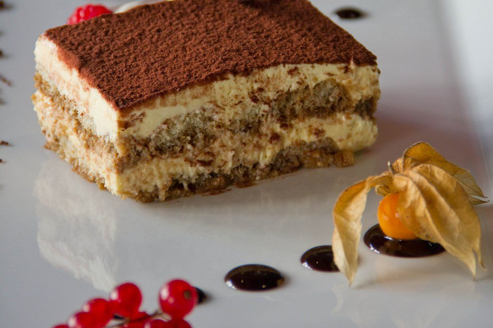

Tiramisù
Description
Tiramisù is a traditionally italian dessert, made of espresso soaked Savoiardi fingers, light, smooth and creamy mascarpone and all topped with a light dusting of cacao powder. It's rich and indulgent but so light and airy that there's always room for a slice (or two).
Ingredients:
- 4 eggs
- 500g of Marscapone cheese
- 4 spoons of sugar
- 300g of Savoiardi ladyfingers
- Cold coffee prepared with the moka
- 50g of your favorite liqueur
- Dark chocolate
- salt
Method:
- First, you need to divide the egg yolks and egg whites in two separate bowls and add 3 tbsps of sugar to each. Whisk the egg whites until they are stiff and glossy.
- Then continue with the egg yolks and whisk those with an electric whisk until pale and thick. Add the mascarpone and whisk again until smooth and creamy.
- Next, add one-third of the whisked egg whites to the mascarpone mixture and gently fold it in as you would with a cake batter. Continue with the remaining whites a third at a time until it's completely incorporated.
- Mix the espresso and coffee liqueur in a shallow bowl and dip in the Savoiardi ladyfingers for 1-2 seconds on each side and line them on the bottom of the dish in an even layer.
- Add half of the mascarpone mixture over the ladyfingers and spread out in an even layer, top with some grated dark chocolate.
- Repeat with a second layer of soaked ladyfingers and mascarpone as directed above. Finally, dust with cocoa powder and chill in the fridge for roughly 6-8 hours.